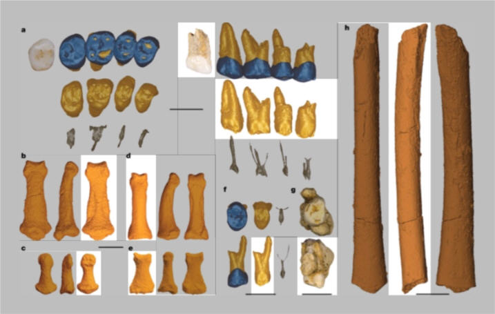
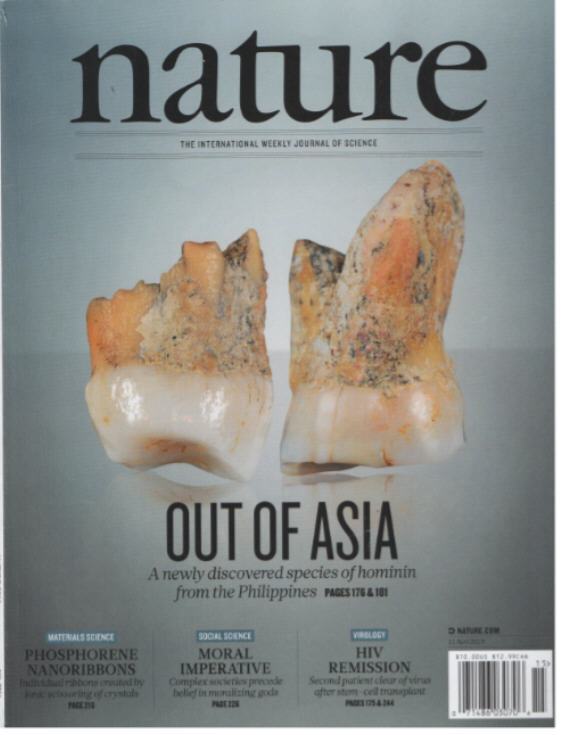

</P>
<H2>The Fossil Evidence</H2>
<P>Here's what the report in <I>Nature</I> said:
<P><CENTER>
<TABLE WIDTH=90%, BGCOLOR=WHITE CELLPADDING=5>
<TR><TD>
<P><B>Abstract</B><BR>
<FONT COLOR=PURPLE><B>A hominin third metatarsal [foot bone] discovered in 2007</B></FONT> in Callao Cave (Northern Luzon, the Philippines) and dated to 67 thousand years ago provided the earliest direct evidence of a human presence in the Philippines. <FONT COLOR=PURPLE><B>Analysis of this foot bone suggested that it belonged to the genus <I>Homo</I>, but to which species was unclear.</B></FONT> Here <FONT COLOR=PURPLE><B>we report the discovery of twelve additional hominin elements that represent at least three individuals</B></FONT> that were found in the same stratigraphic layer of Callao Cave as the previously discovered metatarsal. These specimens display a combination of primitive and derived morphological features that is different from the combination of features found in other species in the genus <I>Homo</I> (including <I>Homo floresiensis</I> and <I>Homo sapiens</I>) and <FONT COLOR=PURPLE><B>warrants their attribution to a new species</B></FONT>, which we name <I>Homo luzonensis</I>.
<A HREF=){kind=link}

| Feature Article - May 2019 |
| by Do-While Jones |
Scientists claim to have discovered a new human species.
In a blockbuster report, Science News said,
|
A new member of the human genus has been found in a cave in the Philippines, researchers report. Fossils with distinctive features indicate that the hominid species inhabited the island now known as Luzon at least 50,000 years ago, according to a study in the April 11 Nature. That species, which the scientists have dubbed Homo luzonensis, lived at the same time that controversial half-sized hominids named Homo floresiensis and nicknamed hobbits were roaming an Indonesian island to the south called Flores (SN: 7/9/16, p. 6). In shape and size, some of the fossils match those of corresponding bones from other Homo species. "But if you take the whole combination of features for H. luzonensis, no other Homo species is similar," says study coauthor and paleoanthropologist Florent Détroit of the French National Museum of Natural History in Paris. 1 |
Reading further into the story, Science News immediately began to backtrack.
|
If the find holds up to further scientific scrutiny, it would add to recent fossil and DNA evidence indicating that several Homo lineages already occupied East Asia and Southeast Asian islands by the time Homo sapiens [modern humans] reached what's now southern China between 80,000 and 120,000 years ago (SN: 11/14/15, p. 15). The result: an increasingly complicated picture of hominid evolution in Asia. 2 |
The phrase, "an increasingly complicated picture of hominid evolution" means these fossils are inconsistent with the current consensus.
|
But some scientists not involved in the research say it's too soon to declare the Luzon fossils a brand-new Homo species. Détroit's group, so far, has been unable to extract ancient DNA from the fossils. So "all [evolutionary] possibilities must remain open," says archaeologist Katerina Douka of the Max Planck Institute for the Science of Human History in Jena, Germany. 4 |
Here are the "twelve additional hominin elements that represent at least three individuals." The picture in Nature might be confusing because they show multiple views of each fossil. We have shaded the duplicate views to make the 12 fossils stand out more. The pictures of the teeth are also somewhat confusing because of the "three-dimensional rendering of enamel (dark blue), dentine and cement (light brown)." 5
 |
|---|
| Continued excavations in Callao Cave (Fig. 1) that originally yielded the hominin third metatarsal (which we here call CCH1 for 'Callao Cave Hominin 1') have produced another twelve hominin elements (Extended Data Fig. 1a) from the same stratigraphic layer (layer 14): seven postcanine maxillary teeth (CCH6-a to CCH6-e, CCH8, CCH9; Fig. 2a, f, g), two manual phalanges [hand bones] (CCH2 and CCH5; Fig. 2b, c), two pedal phalanges [foot bones] (CCH3 and CCH4; Fig. 2d, e) and a femoral shaft [leg bone] (CCH7; Fig. 2h). CCH1 and CCH6-a are directly dated by U-series analysis to minimum ages of 67 thousand years (kyr) and 50 kyr, respectively. Crown morphology, grade of occlusal wear and exact correspondences of interproximal contact facets demonstrate that five of the upper right teeth belonged to a single individual (CCH6-a to CCH6-e; Extended Data Fig. 1b-g and Supplementary Information). The presence of two right upper third molars (M3; CCH6-a and CCH9) and a juvenile femoral shaft (CCH7) indicates that at least three individuals are represented. On the basis of the unique mosaic of primitive (that is, Australopithecus-like) and derived (that is, H. sapiens-like) morphological features observed on these specimens, we assign them to a new species, H. luzonensis. 6 |
In other words, "We can't identify them, so we assume they must have come from a new species."
There are "notable similarities;" but there are also differences that are "distinct."
|
Implications of H. luzonensis for hominin evolution The origin of H. luzonensis, as well as its phylogenetic relationships with other hominins present in eastern Asia at around the same time--including H. sapiens, H. floresiensis and Denisovans, and hominins recently discovered in China--remains to be determined. As is the case for most hominins recovered from tropical Asia, attempted DNA extraction from H. luzonensis fossils has been unsuccessful. Direct dates on H. luzonensis tooth and bone samples indicate it was present on Luzon before 50 kyr ago and the recent discovery of stone tools and a butchered rhinoceros in the nearby Cagayan Valley indicates that hominins, perhaps H. luzonensis, have been present on Luzon since more than 700 kyr ago. Clearly, both H. luzonensis and H. floresiensis were present east of the Wallace Line on Luzon and Flores, respectively, at the same time and perhaps even over a similar temporal interval. The skeletons of both species present anatomical traits that are either rare or absent elsewhere in the genus Homo but have similarities with those of Australopithecus. As is the case with the island of Flores, a substantial sea crossing has always been required to reach Luzon from any mainland, even during the lowest sea level periods of the Quaternary period (Fig. 1). The insular nature of Luzon and the Philippine archipelago east of Palawan more generally is reflected in the high rates of endemism recognized in vertebrate faunas. Given the highly endemic nature of the Luzon vertebrate faunas, evolutionary convergences and/or reversals under the effects of insular evolution may explain the distinct anatomy of H. luzonensis; however, further discoveries and more definitive evidence are needed. The discovery of H. luzonensis underscores the complexity of the evolution, dispersal and diversity of the genus Homo outside of Africa, and particularly in the islands of Southeast Asia, during the Pleistocene. 7 |
In plain English, the connection with other fossils (if there is any connection) "remains to be determined." They can't make a DNA comparison because they haven't been able to extract any DNA. These fossils might upset the current story about human evolution, but perhaps not, because the similarities might just be the result of "convergent evolution" (the notion that unrelated species happened to evolve similar features) or "reversals" (an evolutionary regression which is misleading). All we can be sure of is that more money is needed to study the fossils.
Some evolutionary scientists question the results.
|
The mosaic of fossil features that the team interprets as distinctive, for instance, may have been a product of interbreeding between two or more earlier Homo species, creating hybrids, but not a new species. Or perhaps a small population of, say, H. erectus that survived on an isolated island like Luzon for possibly hundreds of thousands of years simply acquired some skeletal features that its mainland peers lacked, rather than evolving into an entirely new species, says paleoanthropologist María Martinón-Torres. 8 |
In other words, they have discovered seven teeth and five bones which they can't positively identify as having come from a known species, and if they come from an unknown species, it doesn't really fit with the previous story of human evolution.
The real tragedy is that money that could be spent on legitimate scientific research is wasted on evolutionary nonsense.
On pages 254 through 258 of this same issue of Nature was an article by 19 researchers (with names including Mohammed, Elizabeth, Joseph, Juan, Frankenberger, Kang, and Liu--if you care about diversity) titled, "Effective breast cancer combination therapy targeting BACH1 and mitochondrial metabolism." That seems pretty important--but here's what was on the cover of that magazine.
 |
|---|
Judging from the cover, the editors of Nature think speculation about some teeth is more interesting to their readers than an effective breast cancer treatment. Admittedly, the breast cancer article might be as bogus as the H. luzonensis article. We are in no position to judge. We simply want to point out how obsession with evolution diverts attention from more important scientific studies.
| Quick links to | |
|---|---|
| Science Against Evolution Home Page |
Back issues of Disclosure (our newsletter) |
| Web Site of the Month |
Topical Index |
Footnotes:
1
Bruce Bower, Science News, April 10, 2019, "A new hominid species has been found in a Philippine cave, fossils suggest", https://www.sciencenews.org/article/new-hominid-species-homo-luzonensis-philippines
2
ibid.
3
ibid.
4
Florent Détroit, et al., Nature, 10 April 2019, "A new species of Homo from the Late Pleistocene of the Philippines", pages181-186, https://www.nature.com/articles/s41586-019-1067-9
5
ibid.
6
ibid.
7
ibid.
8
Bruce Bower, Science News, April 10, 2019, "A new hominid species has been found in a Philippine cave, fossils suggest", https://www.sciencenews.org/article/new-hominid-species-homo-luzonensis-philippines